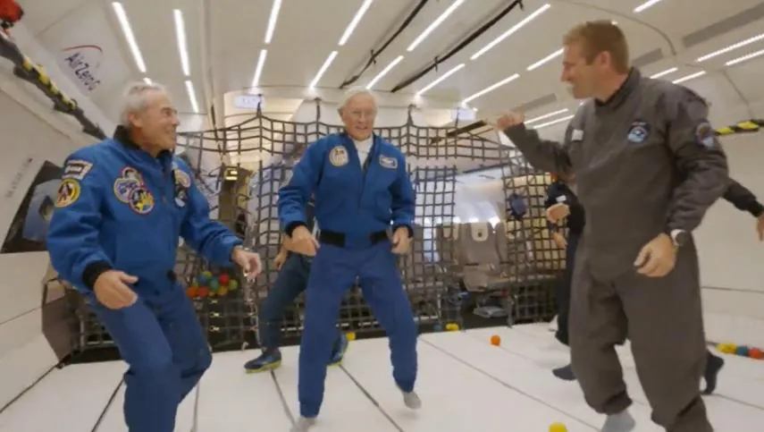

Experimenta la ingravidez
El A310 es una rareza: apenas hay una decena operando como avión de pasajeros en el mundo. Y hay un
avión de este tipo que lleva a viajeros muy especiales: son científicos y personas que quieren
experimentar la sensación de la ingravidez.
Sí, no hace falta viajar al espacio exterior o sumergirse en una piscina a docena de metros de
profundidad para desafiar a Isaac Newton y sentir la sensación de flotar y sentir el cuerpo tan
liviano
como una pluma.
Cómo es el vuelo parabólico
Cuando el A310 se encuentra a unos 6.000 metros de altura y a una velocidad de 830 km/h el piloto lo
eleva unos 50º con respecto al plano horizontal, lo que produce un efecto de ‘hipergravedad’.
Durante 20 segundos, en el interior de la aeronave siente un peso que es 1,8 veces el de la gravedad
terrestre.
“La parábola comienza: cuando el avión está en pleno ascenso la tripulación reduce la velocidad de
los
motores y sitúa al avión en su trayectoria balística”, detalla la empresa Novespace.
En ese punto el A310 entra en gravedad cero y describe una parábola al emprender una caída libre de
22
segundos.

La sensación de ingravidez, que puede ser un plazo demasiado breve, se acumula en una quincena
parábolas; por lo que al final se contabilizan unos 10 minutos (y hasta 30 en algunos proyectos
científicos) de sentir la sensación que no hay peso en el cuerpo.
Desde que se lanzaron estos vuelos de ingravidez, en 2013, unos 11.520 personas han vivido esta
experiencia a través de 217 vuelos. Además la compañía auspició 800 experimentos a bordo de su A310.